O que é um app?
Um aplicativo é um software criado para rodar em dispositivos móveis. Ele possui telas, comandos, dados e uma finalidade.
Neste tutorial, vamos estudar os fundamentos da programação mobile e construir, passo a passo, a interface de um aplicativo de agenda de contatos usando o App Inventor.
A primeira versão do projeto será focada na construção visual da interface, utilizando a aba Designer do App Inventor.
Antes de construir um aplicativo, é preciso entender o que ele é e por que ele existe.
Um aplicativo é um software criado para rodar em dispositivos móveis. Ele possui telas, comandos, dados e uma finalidade.
Aplicativos existem para resolver problemas, facilitar tarefas e atender necessidades de pessoas, empresas e serviços.
O usuário utiliza o aplicativo. O desenvolvedor pensa em como o aplicativo será construído e como cada etapa funcionará.
Ao criar um app, não basta pensar na aparência. É preciso entender o caminho: telas, ações, dados e resultados.
Um aplicativo combina interface visual, lógica de funcionamento e dados que podem ser digitados, processados, salvos ou enviados.
Escolha um aplicativo que você utiliza no dia a dia e responda:
Todo aplicativo começa com um problema que precisa ser compreendido.
Uma agenda de contatos em papel pode funcionar, mas apresenta limitações: dificuldade para alterar dados, localizar contatos, organizar informações e evitar rasuras.
A solução proposta será transformar essa necessidade em um aplicativo simples de agenda de contatos.
Conversar com o usuário para entender o que o aplicativo precisa fazer.
Desenhar a interface antes de construir, usando um wireframe.
Montar a tela no Designer e, depois, adicionar comportamento com blocos.
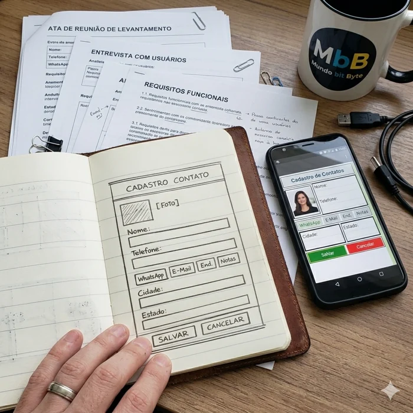
O App Inventor permite construir aplicativos por meio de componentes visuais e blocos.
O Designer monta a interface. Os Blocos programam o comportamento.
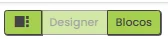
Nesta primeira versão, usaremos componentes das áreas Interface de Usuário e Organização.
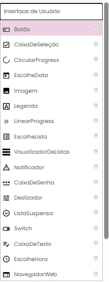
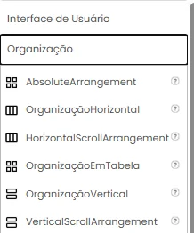
Antes de montar a tela, precisamos entender como os componentes serão organizados.
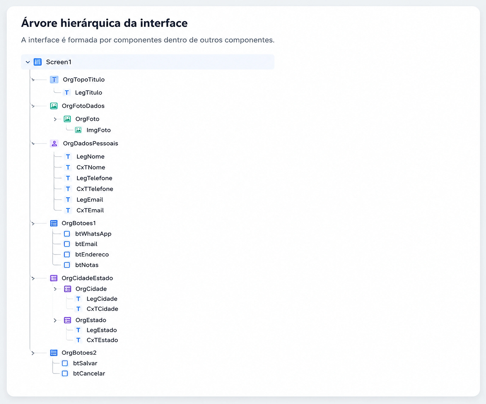
A tela será construída por etapas. Em cada etapa, veja o que inserir, quais propriedades alterar e qual será o resultado.
A tela inicial aparece vazia, com o título padrão Screen1.
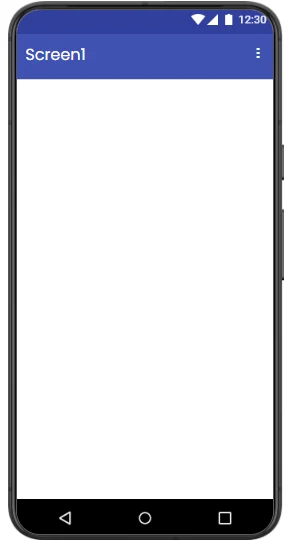
Antes de inserir os componentes, configure a tela principal do aplicativo.
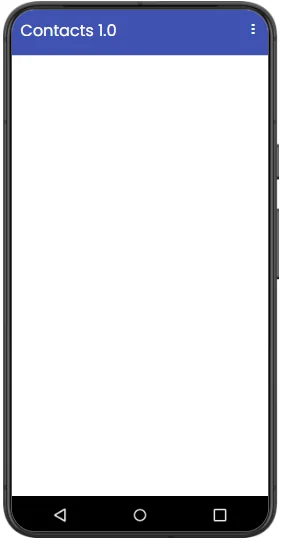
Agora será criada a faixa superior da interface, onde aparece o título da agenda.
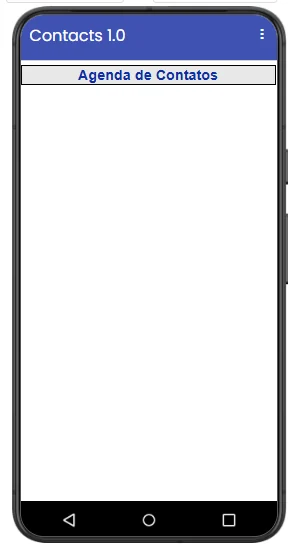
Esta etapa cria a área principal da tela, dividindo foto e dados pessoais.
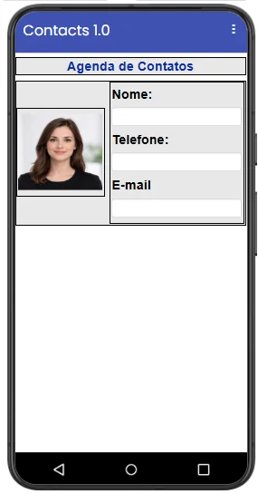
A primeira área de botões reúne ações rápidas do contato.
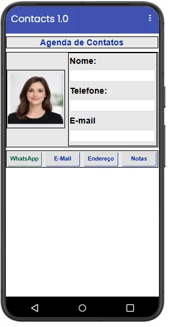
A área de cidade e estado é formada por uma organização horizontal com duas colunas verticais.
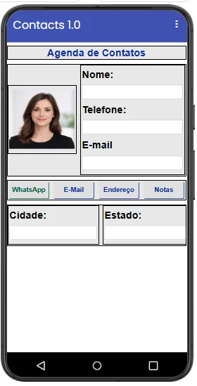
A última organização da interface contém os botões principais: Salvar e Cancelar.
Agora vamos testar a Agenda de Contatos no celular usando o MIT AI2 Companion.
O MIT AI2 Companion é o aplicativo que permite testar o projeto do App Inventor no celular sem gerar um APK a cada alteração.

Com o aplicativo instalado no celular, volte ao App Inventor no computador para iniciar a conexão.
O App Inventor exibirá um QR Code. Esse código será lido pelo Companion para conectar o projeto ao celular.

Depois da leitura do QR Code, o App Inventor envia temporariamente o projeto para o celular.
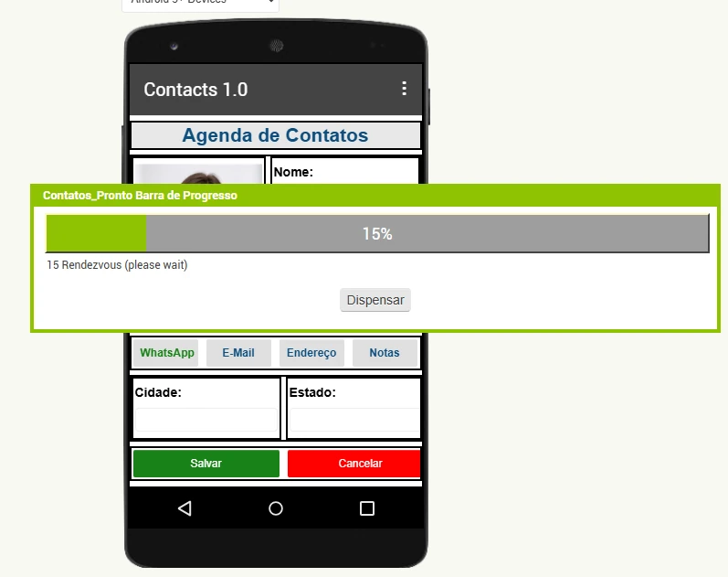
Quando a conexão terminar, a Agenda de Contatos aparecerá no celular.
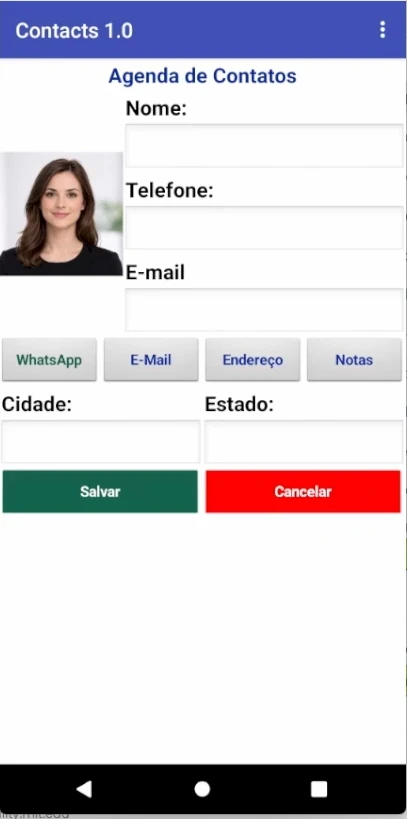
Agora vamos programar o comportamento da interface seguindo a mesma ordem visual do aplicativo.
Antes de programar os botões, vamos melhorar a interação dos campos de texto.
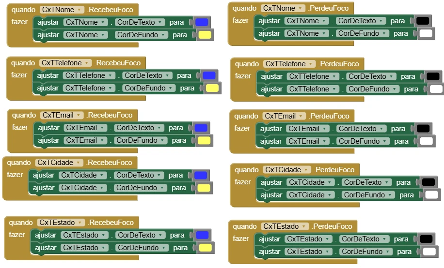
O botão WhatsApp será programado para mostrar uma mensagem com o nome e o telefone digitados.
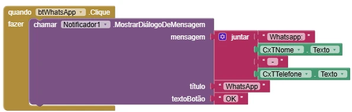
O botão E-mail será programado para mostrar uma mensagem com o nome e o e-mail digitados.
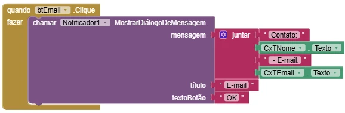
O botão Endereço exibe uma mensagem reunindo os dados de localização do contato.
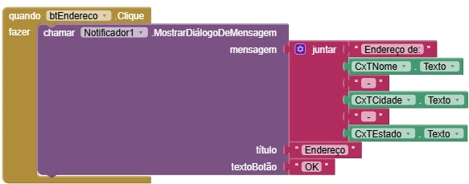
O botão Notas informa que o contato ainda não possui nenhuma nota cadastrada.
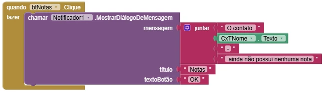
Antes de programar os botões finais, vamos criar um procedimento para limpar os campos da tela.
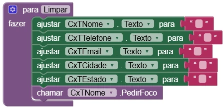
O botão Salvar verifica os campos obrigatórios antes de simular o cadastro do contato.
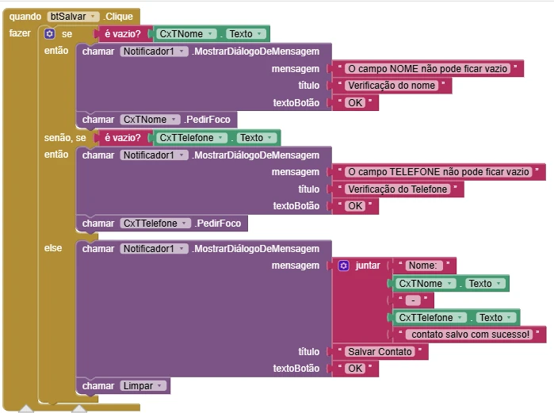
O botão Cancelar mostra uma mensagem de cancelamento e limpa os campos da tela.
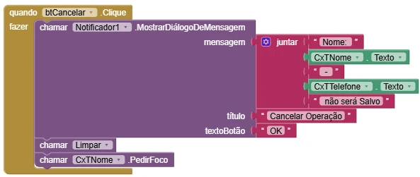
Agora que todos os blocos foram programados, é hora de validar o funcionamento do aplicativo. Em desenvolvimento de software, programar é apenas uma parte do trabalho. Também é necessário testar para verificar se tudo funciona conforme o esperado.
Pratique a construção de telas no App Inventor usando organizações, componentes visuais e propriedades.
Construa a interface de um aplicativo simples para registrar tarefas de estudo.
Construa uma interface para cadastrar produtos de uma loja ou estoque.
Construa uma interface para registrar gastos pessoais ou familiares.
Construa uma interface para agendar um atendimento, reunião ou consulta.
Construa uma interface para registrar livros e empréstimos de uma biblioteca.
Agora que você já praticou a construção de interfaces no Designer do App Inventor, chegou o momento de desenvolver aplicativos que respondem às ações do usuário.
Imagine que você trabalha em uma empresa que desenvolve soluções para casas inteligentes. Um dos primeiros recursos que os clientes desejam é controlar lâmpadas pelo celular.
Embora neste exercício a lâmpada seja apenas uma imagem na tela, a mesma lógica poderá ser utilizada futuramente para controlar uma lâmpada real por meio de um microcontrolador, como Arduino ou ESP32.
Esse tipo de projeto combina Programação Mobile, Sistemas Embarcados e Internet das Coisas (IoT), permitindo que dispositivos físicos sejam controlados por aplicativos.
| Componente | Nome |
|---|---|
| Tela | Screen1 |
| Imagem | imgLampada |
| Botão | btnAcesa |
| Botão | btnApagada |
Antes de inserir os componentes, configure a tela principal do aplicativo.
| Propriedade | Valor |
|---|---|
| Título | Controle de Lâmpada |
| AlinhamentoHorizontal | Centro |
| AlinhamentoVertical | Superior |
| Orientação da Tela | Retrato |
Monte uma tela semelhante ao modelo apresentado. Ela deve conter uma imagem da lâmpada e dois botões: um para acender e outro para apagar.
| Componente | Nome | Configuração |
|---|---|---|
| Image | imgLampada | Clicável = Verdadeiro |
| Button | btnAcesa | Texto = Acesa |
| Button | btnApagada | Texto = Apagada |
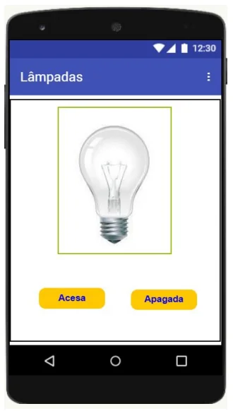
Define o estado inicial do aplicativo quando ele for aberto.
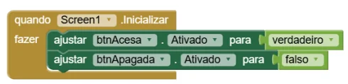
Quando o usuário clicar em Acesa, o aplicativo passa para o estado ligado.
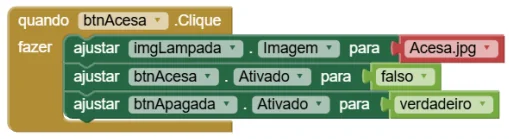
Quando o usuário clicar em Apagada, o aplicativo retorna ao estado desligado.
Quando o usuário clicar diretamente na imagem, o aplicativo verifica o estado atual da lâmpada e alterna entre acesa e apagada.
Este bloco usa a estrutura se / então / senão, permitindo que o aplicativo tome uma decisão.
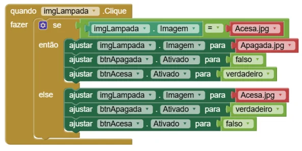
Além das lâmpadas, quais outros equipamentos de uma casa inteligente poderiam ser controlados por um aplicativo semelhante?
Como você faria para que esse aplicativo controlasse uma lâmpada real utilizando um Arduino ou ESP32?
Imagine que você foi contratado para desenvolver a tela de acesso de um sistema acadêmico. Antes de utilizar os recursos do sistema, os usuários precisam informar um nome de usuário e uma senha.
Além de validar as informações digitadas, o sistema deve limitar a quantidade de tentativas incorretas para evitar acessos indevidos.
Seu desafio é desenvolver um aplicativo de login utilizando o App Inventor, aplicando conceitos de interface, eventos, validação de dados, procedimentos e variáveis.
| Componente | Nome |
|---|---|
| Tela | Screen1 |
| Caixa de Texto | cxtUsuario |
| Caixa de Senha | cxtSenha |
| Caixa de Seleção | cxsMostraSenha |
| Botão | botOK |
| Imagem | imgMostraSenha |
| Notificador | Notifier1 |
Antes de inserir os componentes, configure a tela principal do aplicativo.
| Propriedade | Valor |
|---|---|
| Título | Sistema de Login |
| AlinhamentoHorizontal | Centro |
| AlinhamentoVertical | Superior |
| Orientação da Tela | Retrato |
Monte uma tela semelhante ao modelo apresentado. Ela deve conter o título do aplicativo, ícone de login, campo de usuário, campo de senha, opção para mostrar ou ocultar a senha, botão OK e Notificador.
| Componente | Nome | Função |
|---|---|---|
| CaixaDeTexto | cxtUsuario | Receber o nome do usuário. |
| CaixaDeSenha | cxtSenha | Receber a senha digitada. |
| CaixaDeSeleção | cxsMostraSenha | Alternar entre mostrar e ocultar a senha. |
| Botão | botOK | Confirmar os dados informados. |
| Imagem | imgMostraSenha | Exibir o ícone visual de mostrar ou ocultar senha. |
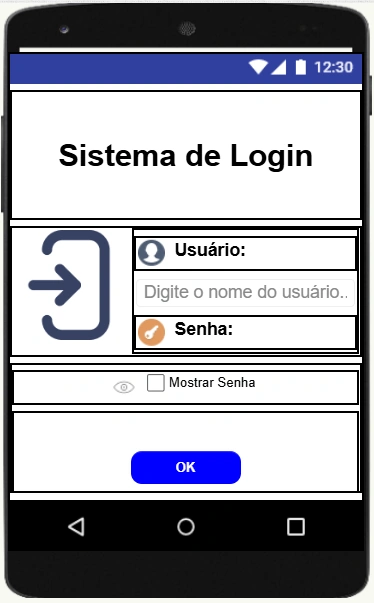
Crie a variável global tentativas com valor inicial 0.
Ela será usada para contar quantas vezes o usuário informou dados incorretos.
Prepara o aplicativo quando a tela é aberta.
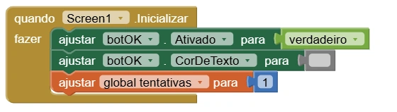
Quando o usuário entra ou sai dos campos, o aplicativo altera as cores para destacar o campo em uso.
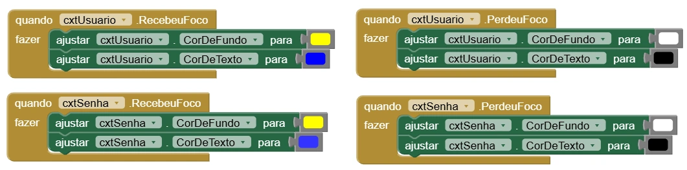
Quando o usuário clicar no botão OK, o aplicativo chama o procedimento VerificarCredencial.
Assim, a lógica principal fica organizada em um procedimento separado.
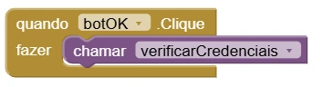
Quando a caixa de seleção for alterada, o aplicativo mostra ou oculta a senha digitada.
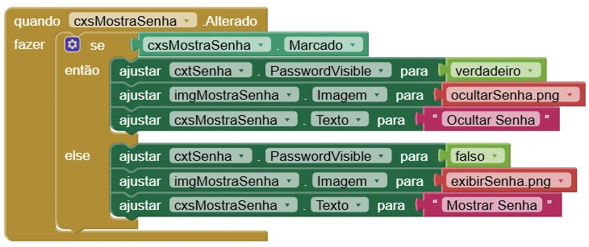
Este é o bloco principal do aplicativo. Ele valida campos vazios, verifica usuário e senha, controla as tentativas e bloqueia o acesso quando o limite é atingido.
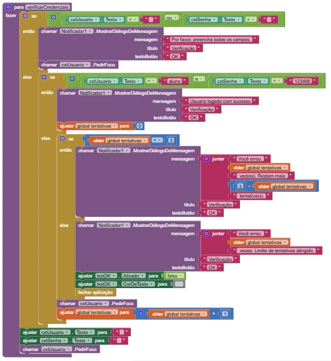
Em sistemas reais, é seguro armazenar usuários e senhas diretamente no aplicativo?
Como grandes sistemas verificam credenciais sem expor as senhas dos usuários?
Imagine que você foi contratado para desenvolver um aplicativo simples para auxiliar profissionais da área da saúde no cálculo do Índice de Massa Corporal (IMC).
O IMC é uma medida utilizada para relacionar peso e altura, permitindo uma avaliação inicial da condição corporal de uma pessoa.
Seu desafio é criar um aplicativo capaz de calcular automaticamente o IMC e informar a classificação correspondente de acordo com uma tabela de referência.
| Componente | Nome |
|---|---|
| Tela | Screen1 |
| Organização Vertical | OrgTopo |
| Organização Vertical | OrgMeio |
| Organização Horizontal | OrgBase |
| Imagem | ImgLogo |
| Rótulo | legPeso |
| Caixa de Texto | cxPeso |
| Rótulo | legAltura |
| Caixa de Texto | cxAltura |
| Botão | btCalcular |
| Botão | btLimpar |
| Notificador | Notificador1 |
Antes de inserir os componentes, configure a tela principal do aplicativo.
| Propriedade | Valor |
|---|---|
| Título | IMC |
| AlinhamentoHorizontal | Esquerda |
| AlinhamentoVertical | Topo |
| Orientação da Tela | Retrato |
Monte uma tela semelhante ao modelo apresentado. Ela deve conter o logo do IMC, os campos para peso e altura e os botões Calcular e Limpar.
| Componente | Nome | Função |
|---|---|---|
| ImgLogo | ImgLogo | Exibir a imagem principal do aplicativo. |
| Rótulo | legPeso | Orientar a digitação do peso. |
| CaixaDeTexto | cxPeso | Receber o peso em kg. |
| Rótulo | legAltura | Orientar a digitação da altura. |
| CaixaDeTexto | cxAltura | Receber a altura em metros. |
| Botão | btCalcular | Calcular o IMC. |
| Botão | btLimpar | Limpar os campos. |
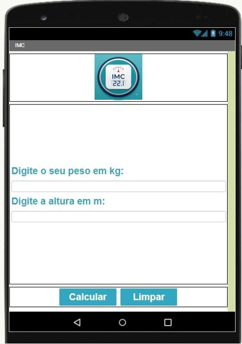
Utilize a tabela abaixo para determinar a situação do usuário.
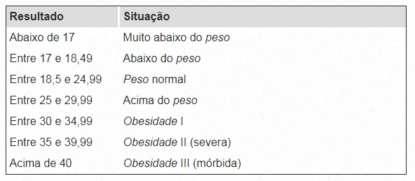
Crie as variáveis global IMC e global Situacao.
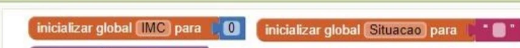
Crie um procedimento chamado VerificarSituacao. Ele será responsável por analisar o valor calculado do IMC e determinar a classificação correspondente.
O exemplo apresentado mostra apenas parte das classificações. Complete o procedimento usando todas as faixas da tabela de IMC.
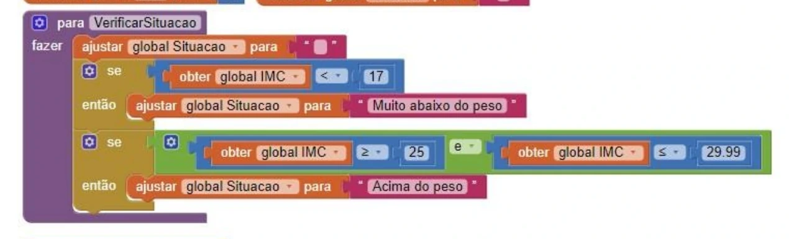
Calcula o IMC, chama o procedimento VerificarSituacao e mostra o resultado com duas casas decimais no Notificador.
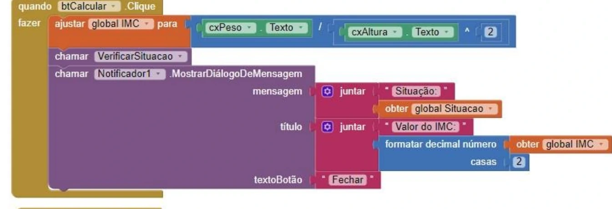
Limpa os campos de peso e altura e posiciona o cursor novamente em cxPeso.
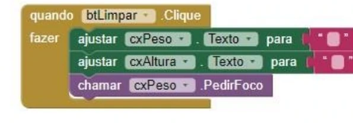
O IMC considera apenas peso e altura. Duas pessoas com o mesmo IMC podem ter condições físicas diferentes?
Quais outras informações poderiam ser utilizadas para complementar uma avaliação física?
Imagine que você foi contratado para desenvolver um jogo simples para dispositivos móveis.
O desafio do jogador é descobrir um número secreto gerado aleatoriamente pelo aplicativo. A cada tentativa, o aplicativo informa se o número digitado é maior ou menor que o número correto.
Esse tipo de jogo é muito utilizado para ensinar conceitos fundamentais de programação, como variáveis, tomada de decisão, repetição de tentativas e controle do estado de um sistema.
Este projeto apresenta a ideia de estado do jogo. A variável gameOver indica se a partida está em andamento ou se já terminou.
| Componente | Nome |
|---|---|
| Tela | Screen1 |
| Rótulo | legTitulo |
| Caixa de Texto | cxtPalpite |
| Botão | btAdvinhar |
| Rótulo | legTentativas |
| Rótulo | lblMensagem |
Antes de inserir os componentes, configure a tela principal do aplicativo.
| Propriedade | Valor |
|---|---|
| Título | Jogo de Adivinhação |
| AlinhamentoHorizontal | Centro |
| AlinhamentoVertical | Centro |
| Orientação da Tela | Retrato |
Monte uma tela semelhante ao modelo apresentado. Ela deve conter o título do jogo, o campo para digitar o palpite, o botão para confirmar e os rótulos para exibir tentativas e mensagens.
| Componente | Nome | Função |
|---|---|---|
| Rótulo | legTitulo | Exibir o título Adivinhe o Número! |
| CaixaDeTexto | cxtPalpite | Receber o palpite digitado. |
| Botão | btAdvinhar | Confirmar o palpite ou reiniciar o jogo. |
| Rótulo | legTentativas | Mostrar a quantidade de tentativas restantes. |
| Rótulo | lblMensagem | Mostrar mensagens de orientação ao jogador. |
Crie três variáveis globais para controlar a partida.
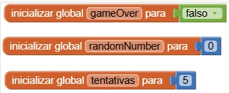
Este procedimento recebe um valor inicial e um valor final, retornando um número inteiro aleatório dentro desse intervalo.
No jogo, ele será usado para gerar o número secreto entre 1 e 100.
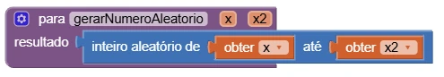
Quando o aplicativo iniciar, a tela chama o procedimento reiniciarJogo.
Assim, toda a configuração inicial da partida fica organizada em um único procedimento.
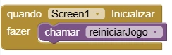
Este procedimento prepara uma nova partida.
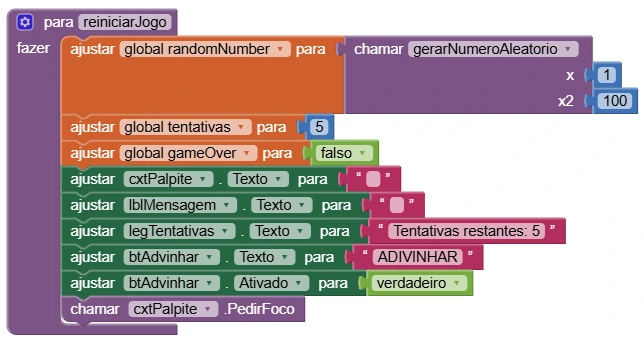
O botão possui duas funções.
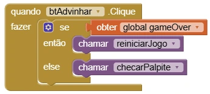
Este é o procedimento principal do jogo. Ele analisa o palpite digitado pelo usuário e decide o que deve acontecer.
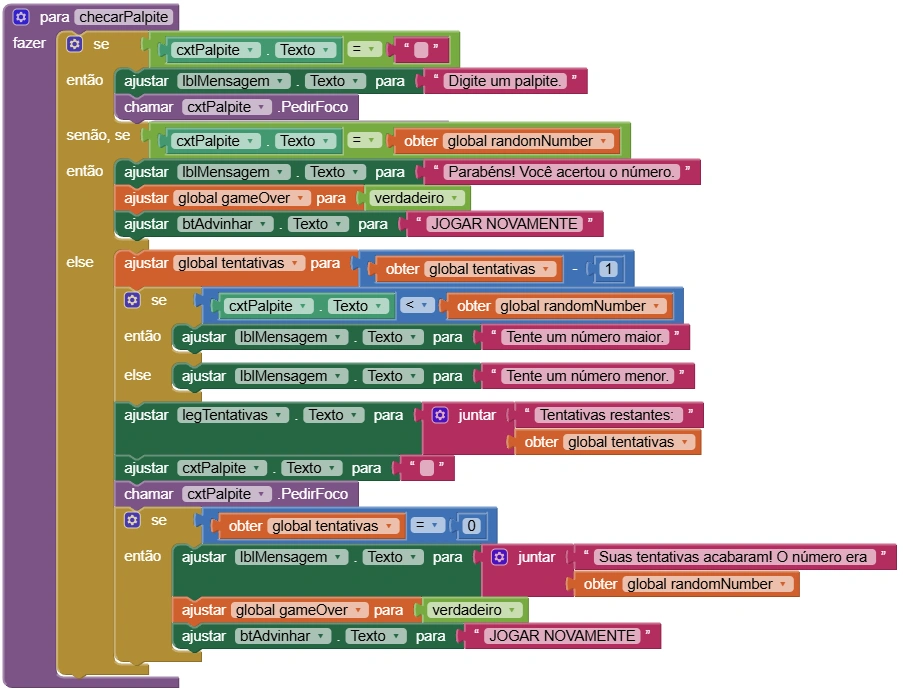
O computador consegue gerar números verdadeiramente aleatórios ou apenas números pseudoaleatórios?
Por que números aleatórios são importantes em jogos, sorteios e sistemas de segurança?